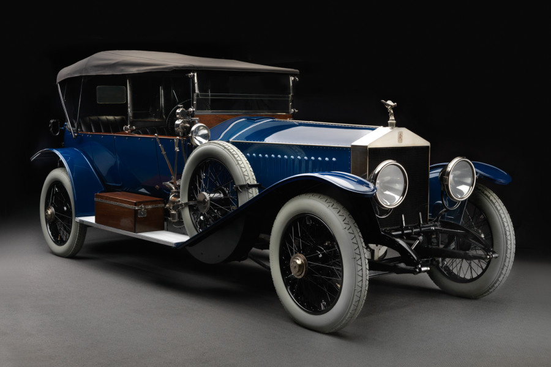

Перший Rolls-Royce

Перший автомобіль, випущений під брендом "Rolls-Royce", відомий як Rolls-Royce 10 hp. Цей
автомобіль був представлений у 1904 році. Він був створений Карлом Фрідріхом Рольсом та
Чарльзом Стюартом Ройсом, засновниками компанії Rolls-Royce. Rolls-Royce 10 hp був розкішним
і ексклюзивним автомобілем, створеним для найвимогливіших клієнтів. Він мав потужність 10 кінських
сил і міг розганятися до швидкості близько 70 км/год. Rolls-Royce 10 hp був відомий своєю надійністю,
розкішним дизайном та високою якістю виготовлення. Цей автомобіль став символом розкіші і престижу і
зарекомендував себе як один з найвищих стандартів у світі автомобільної промисловості. З того часу
Rolls-Royce продовжує виробляти ексклюзивні автомобілі високої якості, які вважаються втіленням розкіші
і переваги. Бренд відомий своїми розкішними деталями, майстерністю виготовлення та відмінною репутацією
в автомобільній індустрії.